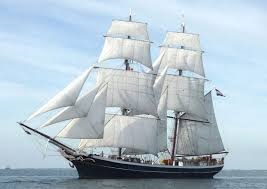

SHIPS
The quays of the River Boyne will, yet again, be adorned by the presence of 6 magnificent Tall and Classic Ships for the duration of The Irish Maritime Festival.
S/V Morgenster: a 46m brig dating from the 1919 and registered in The Netherlands

S/V Keeweaydin: a 90ft Brixham Trawler built in the UK in 1913
S/V Soteria: a 100ft Gaff Rigged Schooner built in 1933 in Denmark.
S/V Vilma: a 90ft long Topsail Schooner also hailing from Denmark and dating back to 1934.
S/V Johanna Lucretia: a 29m long Class A two masted Top Sail Schooner from Belgium.
S/V Spirit of Oysterhaven: this majestic 70ft schooner is Ireland’s largest sail training vessel and host ship for the Drogheda Sail Training Bursary.
HISTORIC LIFEBOATS
Guy and Clare Hunter
Joseph Soar
Canadian Pacific
J.W. Archer
Harold Salvesen
Frances W. Wotherspoon of Paisley
Henry Comber Brown
RFA Sir Galahad
TECHNICAL FLEET
Faire & Suirbheir
Bradan Beatha
Hebble Sand Dredger
Key Events
Opening Ceremony - Parade of Sail
Friday: 13.30pm - 15.00pm
Ships are accessible to the public during the following times
Saturday 20th 2pm – 5pm
Sunday 21st 2:30pm - 5:30pm
For more details on the ships visiting please see : http://www.maritimefestival.ie/ships